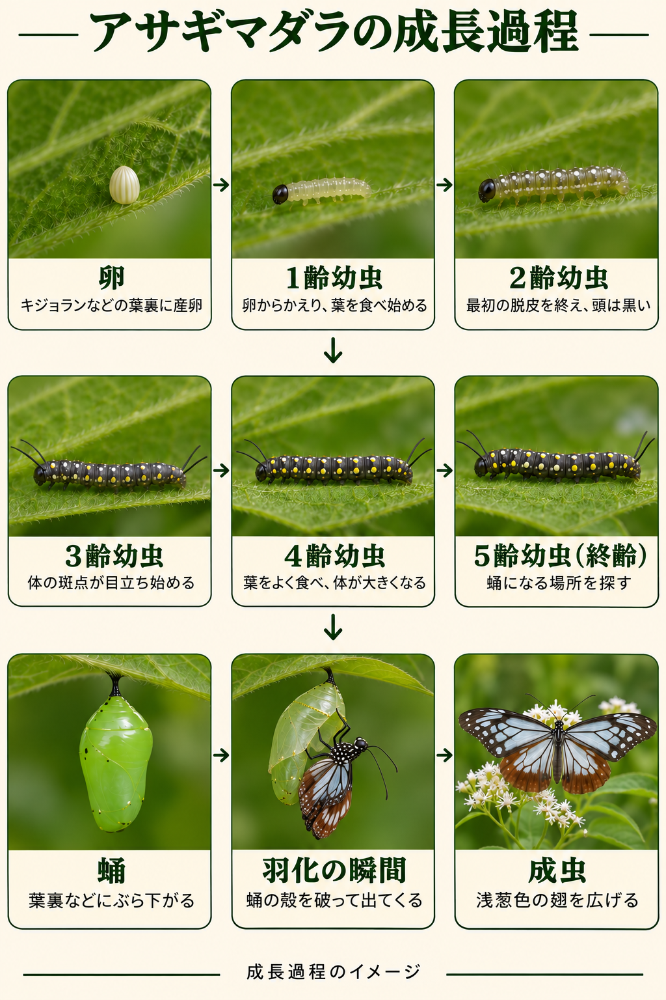

10月18日、わが家の庭では、満開に近づいたフジバカマ原種系でアサギマダラがよく蜜を吸っていました。初飛来の10月12日から18日までに、私が目で確認したのは延べ11匹です。庭で見てきたのは成虫の姿ですが、このチョウはどんな葉を食べて育つのでしょうか。そして、秋に南へ渡った先では、どのように冬を過ごすのでしょうか。今回は、庭での観察から気になったことを調べてみました。
卵から成虫へ。幼虫は5齢まで育つ

メスはキジョランなど、幼虫が食べられる植物の葉裏に卵を一つずつ産みつけます。卵は白く、表面には細い縦の筋が入っています。卵からかえったばかりの幼虫が1齢です。そこから脱皮するたびに2齢、3齢、4齢と進み、4回目の脱皮を終えると、最後の幼虫期である5齢（終齢）になります。
| 段階 | 成長の様子 |
|---|---|
| 卵 | 食草の葉裏につく、縦筋のある小さな白い卵。 |
| 1齢幼虫 | 孵化したばかりの小さな幼虫。頭が黒く、葉を食べ始める。 |
| 2齢幼虫 | 最初の脱皮を終えた幼虫。頭は黒く、成長した幼虫ほど体の模様は目立たない。 |
| 3齢幼虫 | 体がひと回り大きくなり、模様が見えやすくなる。 |
| 4齢幼虫 | 食べる葉の量が増え、体が大きくなる。 |
| 5齢幼虫（終齢） | 黒い体に黄色や白の斑点が目立つ。十分に育つと蛹になる場所を探す。 |
| 蛹 | 葉裏などから尾の先でぶら下がる。丸みのある緑色の蛹。 |
| 羽化の瞬間 | 蛹の殻が開き、翅がまだ縮んだ状態の成虫が出てくる。 |
| 成虫 | 翅が伸びると、浅葱色と栗色の模様が見えるようになる。 |
幼虫の大きさは、同じ齢でも脱皮直後と次の脱皮前で違います。終齢で約5センチになった観察例がありますが、齢を見分けるときは、体の長さに加えて頭や体の模様も手掛かりになります。
黒い体に黄色と白の斑点。前後には一対ずつの突起
終齢幼虫を横から見ると、黒い体に黄色の斑点が並び、その周りに白っぽい小さな斑点が見えます。頭に近い側と尾に近い側には、細長い黒い突起が一対ずつあります。角のように見えますが、いずれも体から伸びる柔らかい突起です。孵化したばかりの幼虫から見比べると、同じチョウでも成長につれてずいぶん姿が変わります。
黒と黄色のはっきりした配色には、捕食者に目立つ警戒色としての意味があると考えられます。幼虫が食べるキジョランにはアルカロイドが含まれますが、斑点の見た目だけで、幼虫がどの成分をどれだけ体内に持っているかまでは分かりません。
フジバカマは成虫の蜜源。幼虫はキジョランなどの葉を食べる
庭で成虫が蜜を吸っていたのはフジバカマです。幼虫の食草には、キジョラン、イケマ、コバノカモメヅル、オオカモメヅルなどがあります。これらは、以前はガガイモ科とされていたキョウチクトウ科の植物です。キジョランは冬も葉をつけるつる植物で、秋に孵化した小さな幼虫が葉裏で冬を過ごす場所にもなります。
わが家の庭でも、2025年9月12日にキジョランの苗を植えました。育て方に苦戦しながらも、あれこれ試し、今も育て続けています。
丸い食べ跡が残る「トレンチング」
小さな幼虫は、キジョランの葉の裏から、まず円を描くように葉をかじります。傷口から白い乳液が出て、そのあと幼虫は囲んだ内側を食べます。この行動をトレンチングと呼びます。切れ目を入れることで、食べる部分に流れ込む乳液を減らしていると考えられています。葉に丸い食べ跡があれば、葉裏をそっとのぞくと、近くに幼虫がいることがあります。
蛹になる前にぶら下がり、羽化してから翅が伸びる
終齢幼虫は、十分に育つと食草を離れ、近くの別の植物で蛹になることもあります。場所が決まると、糸を吐いて足場を作り、尾の先を固定して頭を下にしてぶら下がります。このときはまだ幼虫の姿が残っていて、前蛹（ぜんよう）と呼ばれます。その後、幼虫の皮を脱いで、つやのある緑色の蛹になります。
羽化が近づくと、蛹の殻を通して翅の模様が見えることがあります。殻から出てきたばかりの成虫は翅が縮んでいて、ぶら下がったまま少しずつ翅を伸ばします。図に入れた「羽化の瞬間」は、蛹と、翅を広げて花にとまる成虫の間にあるこの変化です。
南へ渡ったアサギマダラは、台湾や沖縄でどう過ごす？
本州の暖かい地域では、小さな幼虫で冬を越す
神奈川県の観察では、冬のキジョランで2齢・3齢の幼虫が多く確認されています。秋の成虫の南下が知られる一方、本州の暖かい地域では、秋に生まれた幼虫が葉裏で冬を過ごし、春にまた葉を食べて育ちます。成虫の姿を見かけなくなったあとも、食草のある場所では次の世代が育っています。
沖縄を含む南西諸島では、冬にも卵から成虫まで見られる
南西諸島では、冬でも卵、幼虫、蛹、成虫が確認されていて、冬を越すときの姿が一つに決まっていません。季節移動の研究でも、温暖な地域や亜熱帯では、さまざまな成長段階で冬を過ごすと報告されています。本州のキジョランで見られる小さな幼虫の越冬と比べると、同じアサギマダラでも、冬の過ごし方に地域差があることが分かります。
台湾では一年に何世代も育ち、北部では幼虫で越冬する
台湾では、アサギマダラは「大絹斑蝶」と呼ばれています。平地から標高約1,500メートルまで記録され、海岸林や常緑広葉樹林で花を訪れます。台湾の農業部の図鑑では、成虫は年間を通して見られ、一年に何世代も育つ一方、台湾北部では幼虫で越冬するとされています。暑い時期には、より標高の高い山地に移って繁殖することもあります。幼虫の食草としては、現地名で「臺灣牛嬭菜」「鷗蔓」「毬蘭」などが知られています。
マーキング調査では、日本から台湾へ南下した個体に加え、春から初夏に北へ向かう個体も確認されています。秋の南下と春の北上には世代交代が関わります。庭で見送った一匹の行き先は分かりませんが、秋に南へ移動した先でも、産卵し、幼虫が育ち、次の世代へとつながっているのです。
本州の庭ではめったに出会えない、沖縄・台湾のアサギマダラの仲間
秋にわが家の庭へやって来るアサギマダラとは別種で、沖縄や台湾など、南の地域で主に見られるチョウたちです。
| 種類 | 主に見られる場所と特徴 |
|---|---|
| リュウキュウアサギマダラ | 国内では主に南西諸島。沖縄のやんばるでは、冬に成虫が枝やつるに集まり、気温が高い日にはツワブキなどの花で吸蜜する姿も見られます。 |
| ヒメアサギマダラ | 国内では八重山諸島に定着しているとされます。台湾から渡ってきた個体の記録があり、今は島で世代をつないでいる仲間です。 |
| タイワンアサギマダラ | 台湾では「斯氏絹斑蝶」と呼ばれる別種。国内では主に八重山諸島で飛来が記録され、九州の佐賀県でもまれな飛来例があります。台湾にいる通常のアサギマダラは、上で紹介した「大絹斑蝶」の方です。 |
リュウキュウアサギマダラが成虫のまま集まって冬を過ごす一方で、本州ではアサギマダラの小さな幼虫がキジョランの葉裏で冬を越します。庭ではフジバカマにとまる翅の美しさに目が向いていましたが、食草の丸い食べ跡や、南の島での過ごし方まで知ると、秋に庭で見られる姿は、一年の暮らしのほんの一場面なのだと感じます。